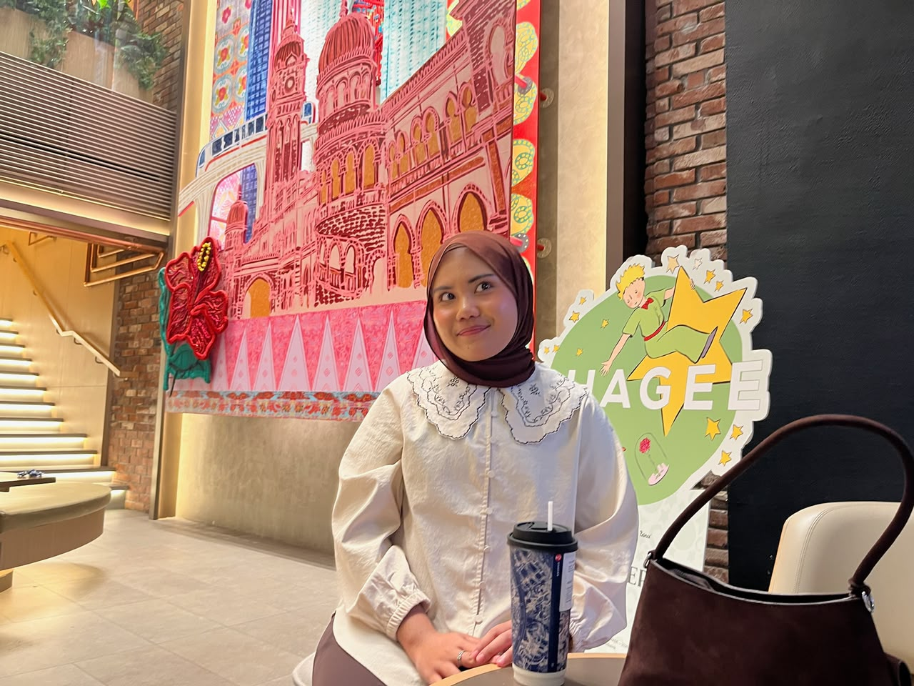
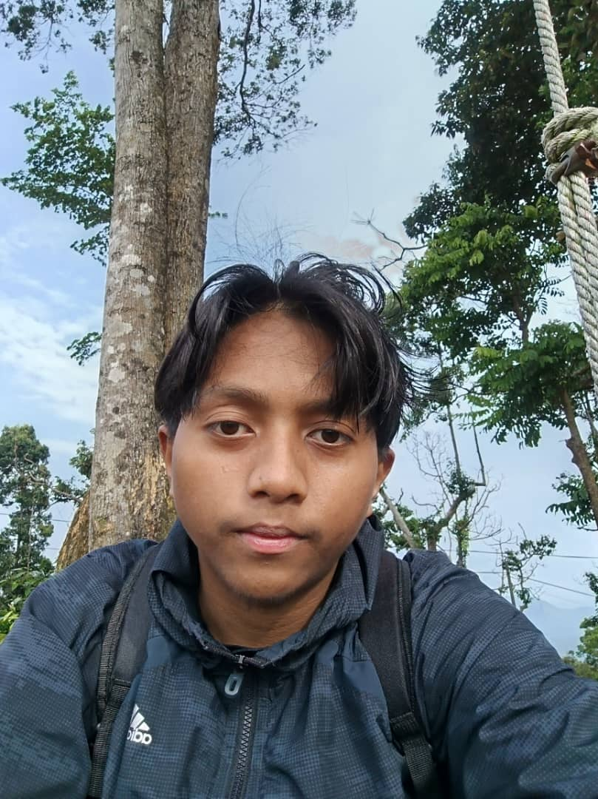
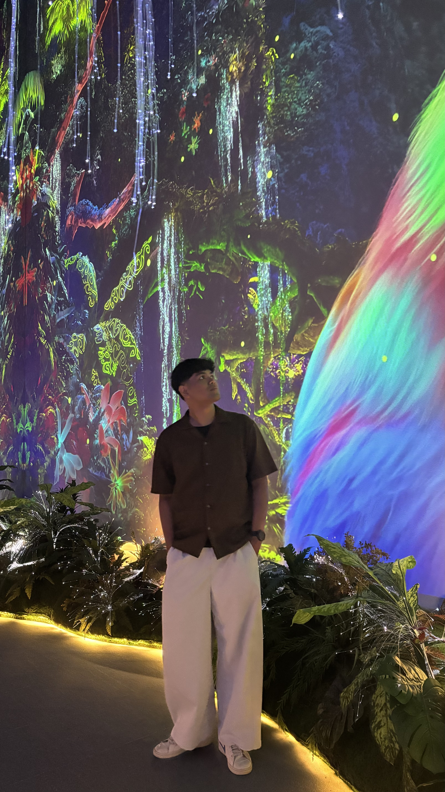
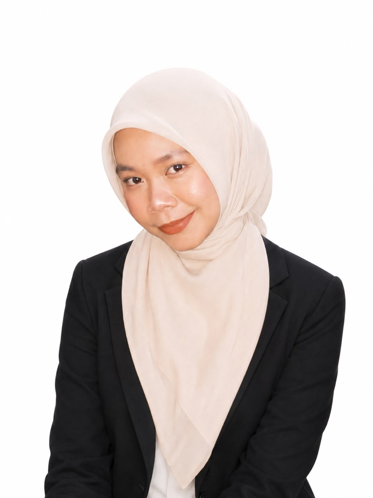

Nur Irdina Maisarah
- Berumur 20 tahun.
- Berasal dari Negeri Sembilan.
- Sarjana Muda Sains Komputer (Kejuruteraan Perisian)
- Gemar membaca buku. Suka mengenali budaya dan adat resam masyarakat yang berbeza.
Rona Nusantara adalah sebuah kolektif lima pelajar yang dedikasi dalam meneroka kepelbagaian budaya Malaysia melalui lensa KAB. Perjalanan kami bermula daripada asal-usul nama kami yang melambangkan identiti bersama dan komitmen terhadap kecemerlangan akademik. E-portfolio ini berfungsi sebagai arkib komprehensif bagi pengalaman, hasil kerja kumpulan, dan refleksi kami, memberikan naratif berstruktur tentang pertumbuhan dan kerjasama kami sepanjang kursus ini.

RONA: Melambangkan kepelbagaian warna, corak, serta keunikan warisan seni, bahasa, dan amalan adat resam berbilang etnik di Malaysia.
NUSANTARA: Merujuk kepada peradaban serantau yang kaya dengan falsafah, rasa kebersamaan, serta semangat gotong-royong yang memayungi kehidupan bermasyarakat.





Momen yang paling mencabar berlaku apabila terdapat percanggahan maklumat antara sumber bertulis lama dan perkongsian lisan pengamal seni tempatan semasa mengumpul bahan kajian. Kumpulan kami terpaksa membuat semakan silang akademik sebanyak tiga kali bagi memastikan penyampaian fakta yang tepat tanpa menyinggung sensitiviti mana-mana pihak.
Pengalaman manis berlaku semasa rakaman perbincangan video apabila ahli kumpulan cuba mempelajari sebutan dialek Kelantan, Iban, dan Sabah. Kesilapan sebutan yang menggelikan hati disambut gelak tawa bersama, menyemarakkan lagi keakraban silaturahim antara kami.
Penemuan unik berlaku semasa perbincangan kelas KAB di mana kami menyedari pelbagai pantang-larang orang tua-tua dahulu rupa-rupanya merupakan kiat psikologi yang logik untuk menjaga kebersihan dan keselamatan diri. Ini memberi apresiasi baharu terhadap kearifan tempatan nenek moyang.
Momen tidak dapat dilupakan adalah apabila kami berpeluang mengadakan temubual maya bersama tokoh pengukir kayu dan tenun warisan. Menyaksikan semangat gigih mereka mempertahankan seni yang kian pupus menanam azam yang mendalam di jiwa kami untuk terus memelihara identiti bangsa.
"Aktiviti suai kenal ini membuktikan bahawa kepelbagaian latar belakang bukannya pemisah, sebaliknya pemangkin ikatan ukhuwah yang indah. Perkongsian amalan tradisi memupuk empati yang tinggi."
"Mendengar naratif rakan sepasukan membuka lensa baharu bagi saya memahami keunikan amalan adat. Komunikasi jujur dan bertoleransi adalah kunci keharmonian."
"Aktiviti perjumpaan ini menggariskan betapa pentingnya kebersamaan dalam menyiapkan tugasan. Semangat gotong-royong menjadikan setiap proses cabaran terasa ringan."
"Perjumpaan suai kenal ini menanam rasa kebanggaan yang utuh terhadap warisan kebudayaan tempatan. Generasi muda bertanggungjawab menjadi jambatan pemelihara seni warisan."
"Sesi Get Together ini mengukuhkan keazaman saya untuk menggunakan keahlian teknologi digital sebagai platform memulihara dan memartabatkan apresiasi budaya Nusantara."
 Assessment 1
Assessment 1
Pembentangan awal kumpulan Rona Nusantara yang mengupas konsep apresiasi budaya, identiti warisan, dan kajian sumber akademik COM3083.
 Assessment 2
Assessment 2
Rakaman video pembentangan dan dokumentari ringkas yang memaparkan hasil kajian budaya, demostrasi kraf tempatan, serta ulasan setiap ahli.
 Final Assessment
Final Assessment
Karya poster digital akhir yang merangkumkan elemen seni warisan, busana tradisional, dan nilai perpaduan masyarakat Nusantara secara visual.
Rekod 14 sesi perbincangan kumpulan (1 jam setiap sesi) berserta dokumen PDF individu dan bukti bergambar.
| Sesi | Tarikh & Masa | Agenda Utama Perbincangan | Masa | Status | Minit PDF |
|---|---|---|---|---|---|
| Mesyuarat 1 | 28 Sep 2026 09:00 PM - 10:00 PM |
Pembentukan kumpulan, pemilihan nama 'Rona Nusantara', pelantikan ketua dan pembahagian tugas awal. | 1 Jam | Selesai | PDF 1 |
| Mesyuarat 2 | 02 Okt 2026 09:00 PM - 10:00 PM |
Perbincangan identiti kumpulan, falsafah nama 'Rona Nusantara' dan penetapan hala tuju tema kebudayaan. | 1 Jam | Selesai | PDF 2 |
| Mesyuarat 3 | 06 Okt 2026 09:00 PM - 10:00 PM |
Pencarian serta pemilihan sumber rujukan akademik dan budaya bagi memenuhi objektif CLO3. | 1 Jam | Selesai | PDF 3 |
| Mesyuarat 4 | 10 Okt 2026 09:00 PM - 10:00 PM |
Perancangan rangka kandungan slid pembentangan bagi Assessment 1 menggunakan platform Canva. | 1 Jam | Selesai | PDF 4 |
| Mesyuarat 5 | 14 Okt 2026 09:00 PM - 10:00 PM |
Penyediaan reka bentuk grafik, susun atur visual dan semakan teks slid pembentangan Assessment 1. | 1 Jam | Selesai | PDF 5 |
| Mesyuarat 6 | 18 Okt 2026 09:00 PM - 10:00 PM |
Sesi latihan pembentangan (rehearsal) dan semakan akhir sebelum pembentangan Assessment 1. | 1 Jam | Selesai | PDF 6 |
| Mesyuarat 7 | 22 Okt 2026 09:00 PM - 10:00 PM |
Perancangan konsep, jalan cerita (storyboard) dan skrip bagi video pembentangan Assessment 2. | 1 Jam | Selesai | PDF 7 |
| Mesyuarat 8 | 26 Okt 2026 09:00 PM - 10:00 PM |
Pengumpulan bahan visual, rakaman suara latar dan klip pembentangan setiap ahli kumpulan. | 1 Jam | Selesai | PDF 8 |
| Mesyuarat 9 | 30 Okt 2026 09:00 PM - 10:00 PM |
Suntingan video pembentangan Assessment 2, penambahan sari kata dan semakan kualiti audio visual. | 1 Jam | Selesai | PDF 9 |
| Mesyuarat 10 | 03 Nov 2026 09:00 PM - 10:00 PM |
Perbincangan konsep infografik dan lakaran awal Poster Pameran Digital bagi Final Assessment. | 1 Jam | Selesai | PDF 10 |
| Mesyuarat 11 | 07 Nov 2026 09:00 PM - 10:00 PM |
Reka bentuk terperinci poster pameran digital dan penyusunan maklumat warisan budaya Nusantara. | 1 Jam | Selesai | PDF 11 |
| Mesyuarat 12 | 11 Nov 2026 09:00 PM - 10:00 PM |
Perkongsian dan pendokumentasian refleksi aktiviti Get Together serta pengalaman setiap ahli. | 1 Jam | Selesai | PDF 12 |
| Mesyuarat 13 | 15 Nov 2026 09:00 PM - 10:00 PM |
Pembangunan laman web E-Portfolio (HTML, CSS, JavaScript) dan penyusunan semua kolum (a hingga k). | 1 Jam | Selesai | PDF 13 |
| Mesyuarat 14 | 19 Nov 2026 09:00 PM - 10:00 PM |
Semakan akhir keseluruhan laman web, pengisytiharan penggunaan AI, tatabahasa dan pengesahan pautan. | 1 Jam | Selesai | PDF 14 |
| Jumlah Jam Perbincangan Terkumpul (14 Mesyuarat): | 14 JAM | 14 Fail PDF • Patuh Syarat | |||
Seret (drag) ke kiri atau kanan untuk melihat gambar, atau klik untuk skrin penuh.


Kumpulan Rona Nusantara mencadangkan agar pengurusan subjek COM3083 menganjurkan "Pameran Kebudayaan Interaktif Kampus (Kampus Cultural Heritage Fair)" secara fizikal pada semester akan datang.
Platform ini membolehkan para pelajar bukan sahaja mempamerkan portfolio secara digital, malah mendemonstrasikan kraf, seni kulinari tradisional, dan pertunjukan budaya secara langsung kepada warga universiti.
"Mengadakan lawatan tapak (field trip) ke muzium atau perkampungan warisan bagi memberi pendedahan pengalaman langsung."
"Menggalakkan tugasan video pendek format TikTok/Reels agar kandungan apresiasi budaya mencapai golongan belia."
"Menyediakan bengkel amali seperti mencanting batik atau ukiran kayu bersama pakar seni tempatan."
"Membangunkan arkib repositori digital universiti untuk mengumpulkan E-Portfolio terbaik pelajar sebagai rujukan rintis."
"Memperluas pendedahan alat teknologi kreatif moden dalam mempersembahkan dokumentasi seni warisan."
Kumpulan Rona Nusantara secara rasmi mengisytiharkan penggunaan alat Kecerdasan Buatan (AI) dalam penyediaan tugasan dan E-Portfolio ini secara telus dan beretika:
Cari istilah seni warisan yang digunakan dalam tugasan ini.
Penghargaan mendalam terhadap nilai, amalan, dan kesenian sesebuah masyarakat tanpa membuat penghakiman sepihak.
Amalan bekerjasama dan tolong-menolong dalam melaksanakan sesuatu kerja demi kesejahteraan komuniti bersama.
Pakaian rasmi atau harian yang mencerminkan identiti, falsafah, dan tahap sosial sesuatu kaum.
Amalan dan aturan hidup yang diwarisi turun-temurun dalam sesebuah kelompok etnik.
Kelompok kebudayaan unik asimilasi tradisi Cina atau India dengan amalan kebudayaan Melayu tempatan.
Kain tenunan bercorak tradisional masyarakat Iban di Sarawak yang kaya dengan simbolisme warisan.


Sertakan pautan video YouTube rasmi anda di sini.
Gunakan butang anak panah pada paparan untuk menukar slid pembentangan.